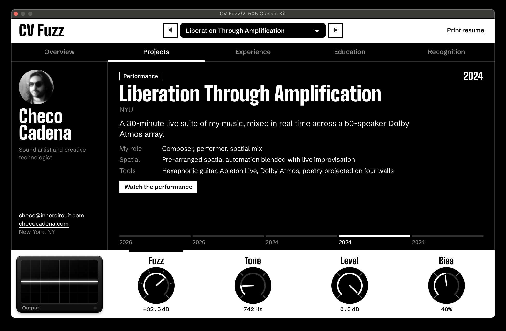
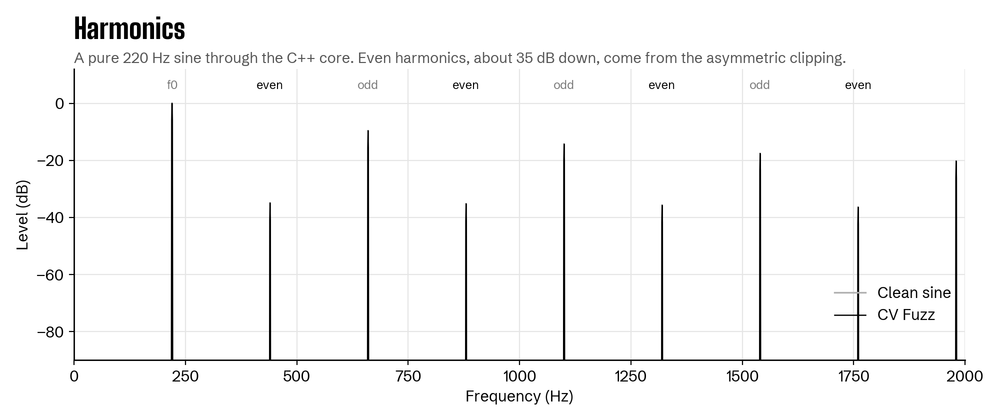
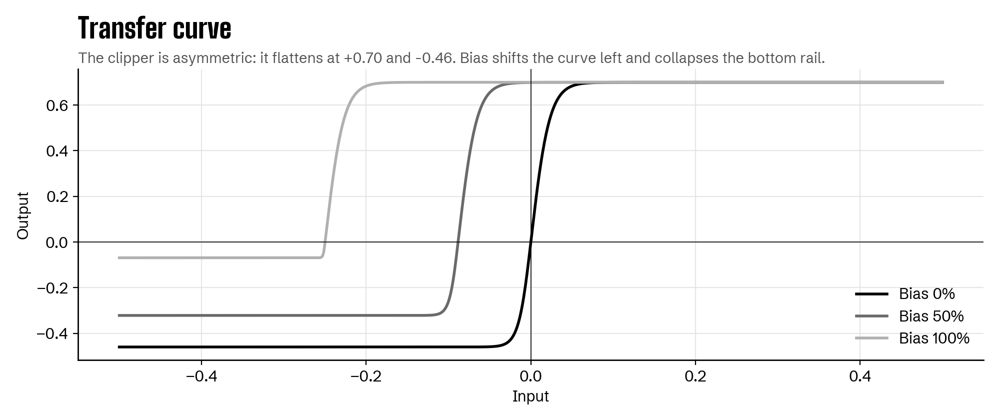
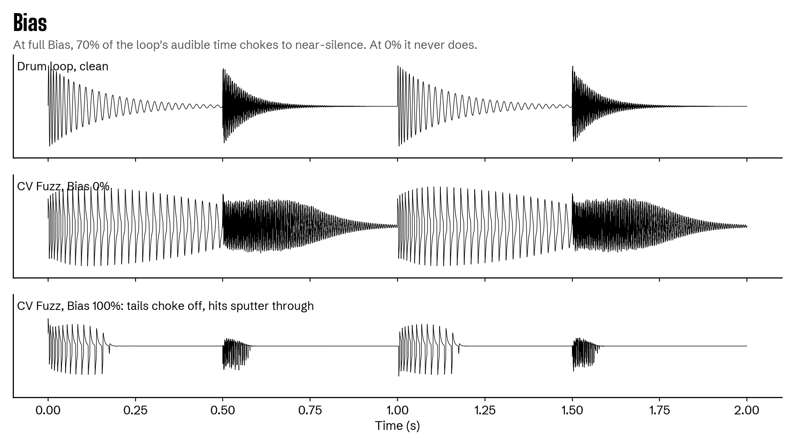

CV Fuzz
A fuzz plugin and interactive resume by Checo Cadena. Each knob shapes the sound and opens a different part of my work.
Unmute to hear a guitar riff through the C++ core as each knob turns.
A pedal, then a plugin, then a resume
At NYU I designed and built a fuzz pedal. CV Fuzz is that circuit rebuilt in C++: asymmetric clipping, a starvable bias stage, 4x oversampling and a tone control, running as an Audio Unit, VST3 and standalone app. The interface is my resume. In modular synths, CV means control voltage, the signal that moves a parameter.

Four knobs, four chapters
Every control is a real, automatable parameter. The tick marks around each knob are detents, one per entry in its section.
Fuzz
0 to +35.7 dB
Drives the input into the clipper. More drive, more of the wave flattens.
ProjectsTone
500 Hz to 6 kHz
Blends from a dark, woolly filter to the full bright signal.
ExperienceLevel
Output in dB
Sets the output volume after the tone stage.
EducationBias
0 to 100%
Starves the stage like a dying battery. Tails gate out, hits sputter through.
RecognitionHow it works
The DSP is one framework-free C++ class. These plots come from running it on test signals. The full walkthrough, with the math for every stage, is in the DSP documentation.
Asymmetric clipping
The clipper flattens at +0.70 on top and -0.46 below. A symmetric clipper only adds odd harmonics. The asymmetry adds even harmonics too, which is what gives fuzz its thick, fizzy character.

The transfer curve
How input maps to output. Bias shifts the curve and collapses the bottom rail, pushing the stage toward half-wave rectification.

Bias on drums
Anything quieter than the bias offset gets pinned to one rail and becomes silence. At full Bias, 70% of this drum loop's audible time chokes off while the hits break through.

Download
Free, for macOS, Windows and Linux. Each download is the full plugin with the same interface.
macOS
AU, VST3, standalone
Signed and notarized by Apple. Native on Apple Silicon and Intel, macOS 11 or later.
Download .pkgWindows
VST3, standalone
Windows 10 or 11, 64-bit. Windows may warn about an unrecognized app; choose More info, then Run anyway.
Download installerLinux
VST3, standalone
x86-64. Unpack and run install.sh. Needs WebKitGTK 4.1, which the script checks for.
Load it in your DAW
- Install. On macOS and Windows, run the installer; under Customize you can pick formats.
- Rescan plugins. In Ableton Live: Settings > Plug-Ins, turn on Audio Units (Mac) and VST3, then Rescan.
- Find it under Checo Cadena > CV Fuzz and drop it on an audio track.
Checo Cadena
Sound artist and creative technologist in New York. I'm a computer control engineer at Amorphic Robot Works and on the Academic Technology Staff at Berklee NYC, and I trained in generative music systems at IRCAM in Paris.